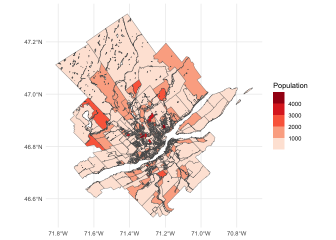

Package {canaccessR} is an Open Data Product with travel time tables to employment and groceries in selected Canadian Metropolitan Areas.
The package was initially developed for a writing project commissioned by the School of Cities of the University of Toronto, and can be used to replicate the results reported in the paper.
Installation
You can install the development version of canaccessR like so:
# install.packages("remotes")
remotes::install_github("paezha/canaccessR")Example
This is a basic example which shows you how to solve a common problem:
library(canaccessR)
library(ggplot2)
library(sf)
#> Linking to GEOS 3.12.1, GDAL 3.8.4, PROJ 9.4.0; sf_use_s2() is TRUELoad the travel time table to employment for Halifax:
data(travel_matrix_emp_hal)The median travel time in minutes from all origins to all destinations in Halifax is:
median(travel_matrix_emp_hal$travel_time_p50)
#> [1] 65Simple features objects for cartography are also included. For example, this is Quebec:
data("census_data_da_que")Plot the population by Dissemination Area:
ggplot() +
geom_sf(data = census_data_da_que,
aes(fill = Population)) +
scale_fill_fermenter(palette = "Reds",
direction = 1) +
theme_minimal()